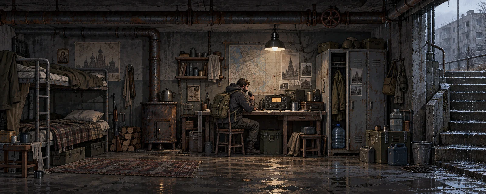

ПЕРВЫЙ СИГНАЛ / ПРОТОТИП 0.1

43°06′ N · 131°53′ E
СЕКТОР 07 / УБЕЖИЩЕ
СЕКТОР 07 / УБЕЖИЩЕ
ГЛАВА 01Кто-нибудь
Кто-нибудь
ещё слышит?
Город молчит. Рация садится.
Нужен аккумулятор из старых гаражей.
СЕКТОР 07
Гаражный кооператив
ВЫЛАЗКА 01120 М ДО ГАРАЖА
▥ РАДИО / СЛАБЫЙ СИГНАЛ
Удерживай стрелки, чтобы идти.
Подойди к ящику и нажми «Обыскать».
Подойди к ящику и нажми «Обыскать».
ОБЫСК…
ВЫЛАЗКА ПРИОСТАНОВЛЕНА
Переведи дыхание.
ЗАДАЧА
Найти аккумулятор в гараже № 28
A / D — движение · E — действие
ВЫЛАЗКА ЗАВЕРШЕНАТеперь
Теперь
есть свет.
Аккумулятор подключён. Впервые за долгое время
убежище перестало быть просто тёмным подвалом.
ПРИНЕСЕНОАккумулятор ×1
«…если слышишь… не выключай…»НЕИЗВЕСТНАЯ ЧАСТОТА · 104.7